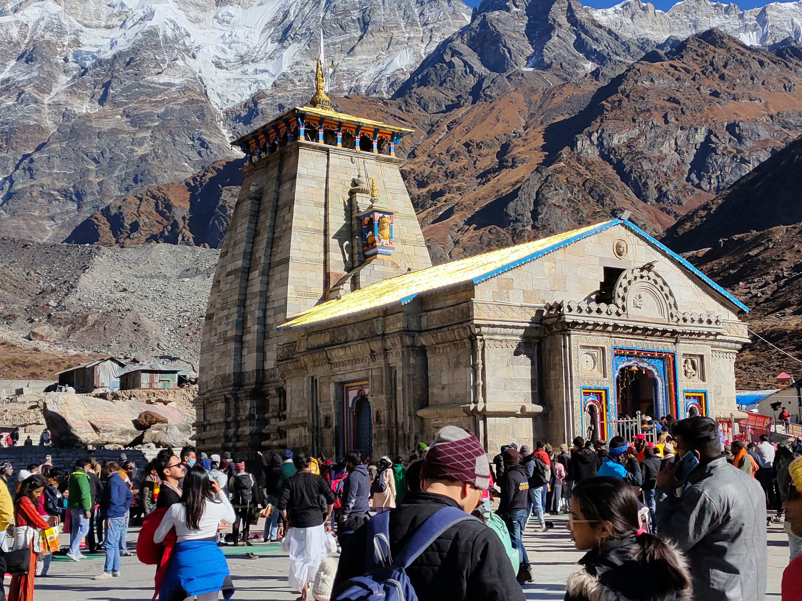

Kedarnath Temple
The Kedarnath Temple is a revered Hindu temple and one of the twelve Jyotirlingas. It is known for its incredible architecture and spiritual significance.
Kedarnath is one of the holiest pilgrimage sites in India, located in the Garhwal Himalayas. It is famous for the Kedarnath Temple, dedicated to Lord Shiva, and surrounded by stunning mountain scenery.
The Kedarnath Temple is a revered Hindu temple and one of the twelve Jyotirlingas. It is known for its incredible architecture and spiritual significance.
Gaurikund is the starting point for the trek to Kedarnath Temple. It features hot springs and offers stunning views of the surrounding landscape.
Chorabari Tal, also known as Gandhi Sarovar, is a serene lake located near Kedarnath. It's a great spot for trekking and enjoying nature.